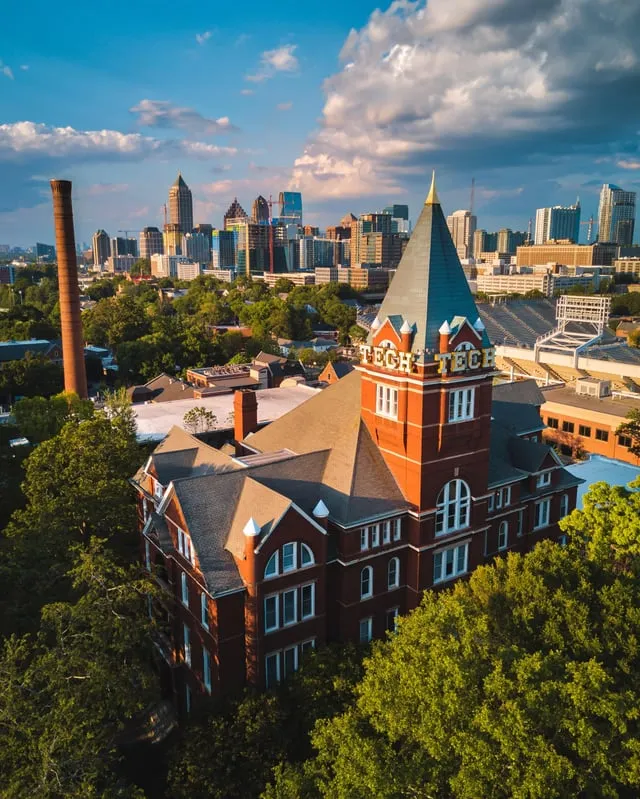
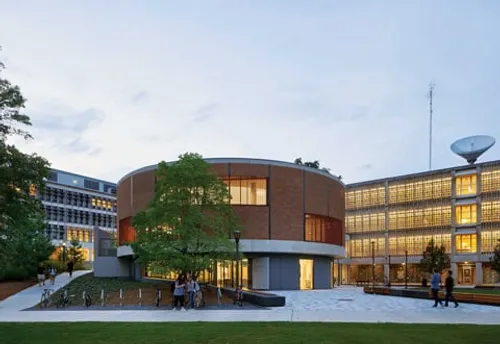
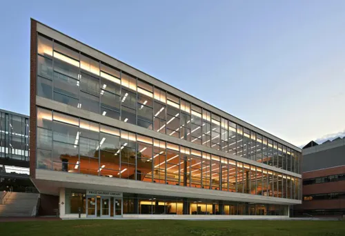

My name is Nicholas Choi. I am a Computer Engineering student at the Georgia Institute of Technology, originally from Fulton, Maryland, and I have been drawn to hardware and electronics for as long as I can remember.
Growing up, I was the kind of person who took things apart to understand how they worked. That curiosity led me to robotics, where by high school I was serving as Vice President of a competitive robotics team, managing hardware design, integrating systems across electrical and mechanical disciplines, and mentoring younger engineers. Four years of building real machines under real competition pressure shaped how I approach engineering: methodically, collaboratively, and with a relentless focus on whether the system actually works.
At Georgia Tech, I am pursuing the CHEA (Computing Hardware Emerging Architectures) and DSSD (Digital Signal and System Design) threads within ECE. These threads reflect my deepest engineering interests. CHEA is where VLSI design lives, the process of translating digital logic into physical silicon by navigating tradeoffs between power, speed, and area. DSSD adds rigorous system-level thinking through signal processing and mathematical modeling. Together they prepare me for the hardware intelligence problems I want to work on.
That interest shows up across my current work. On the RoboJackets autonomous vehicle team I design power distribution systems and write real-time C++ firmware for embedded microcontrollers. In ECE 2020 I am designing digital logic in Verilog on FPGAs from gate-level primitives through full arithmetic units. This semester I also co-developed Bacter.ai, a clinical AI platform I built from backend machine learning pipelines through to a live React frontend.
Beyond engineering, I am a freshman representative in the Korean Undergraduate Student Association, where I help plan cultural events and support the GT community. I speak English, French, and Korean, and find that navigating multiple languages makes me a more attentive collaborator.
"The details are not the details. They make the design."Charles Eames


